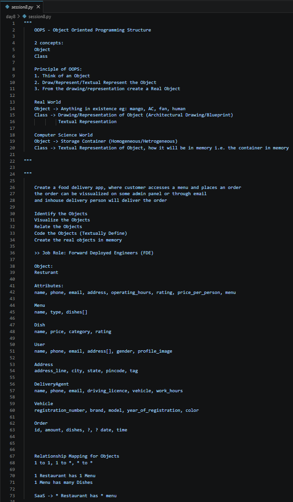
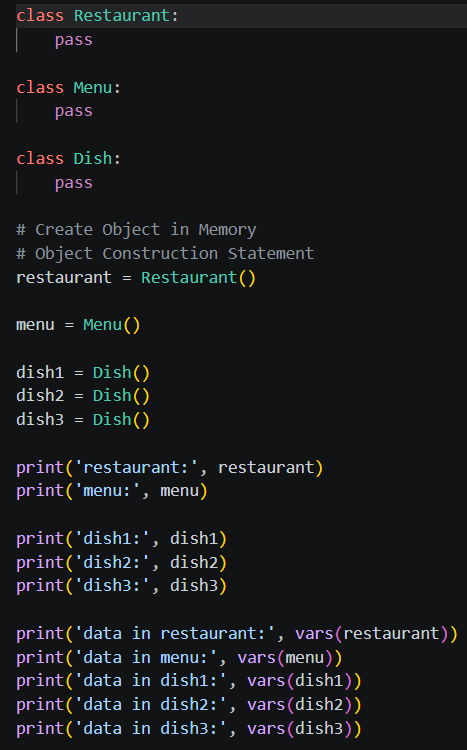
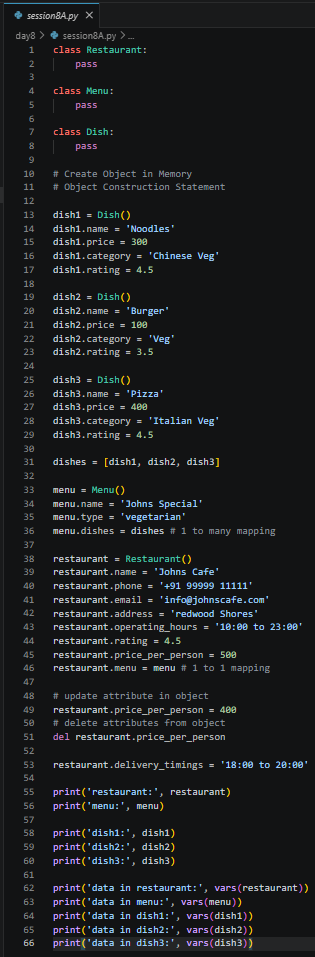
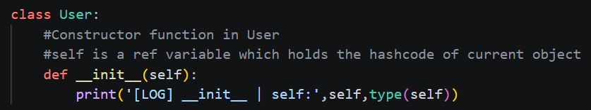
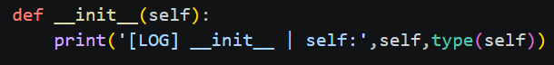
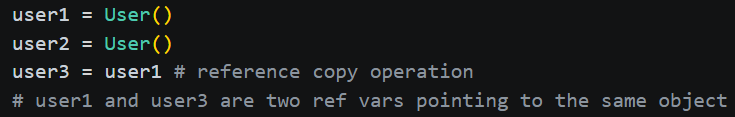
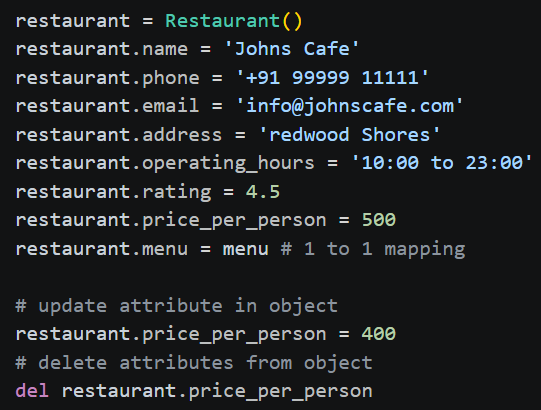
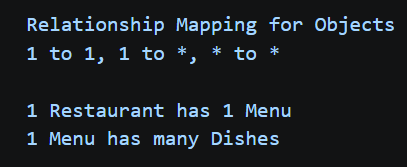
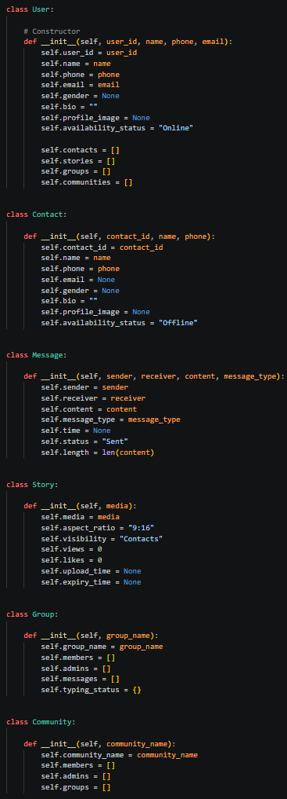
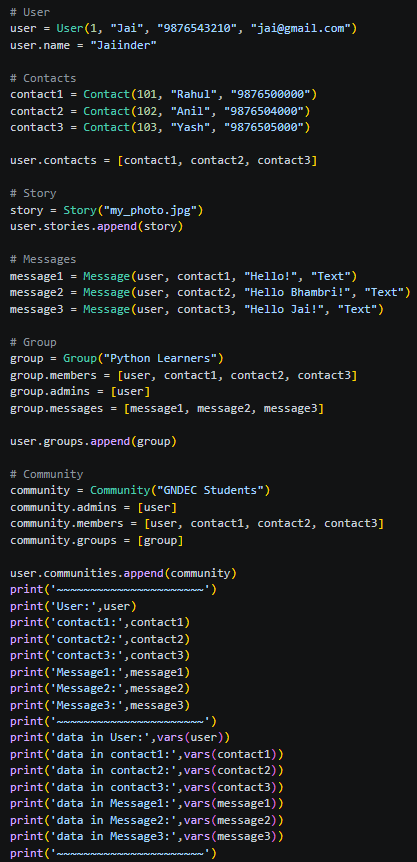

Date: 4 July 2026
Duration: 2:00 Hrs
Training Company: Auribises Technologies
Trainer: Ishant Kumar
Today's session marked the beginning of Object-Oriented Programming (OOP) in Python. Instead of writing programs using only functions and variables, we learned how real-world entities can be modeled using classes and objects. The trainer explained the complete OOP design process through practical examples such as a food delivery application and a WhatsApp messaging system.
The session started with understanding the two fundamental concepts of Object-Oriented Programming:
The trainer explained the basic OOP design methodology:

To understand object-oriented design, we analyzed how a food delivery application can be represented using objects. We identified the major entities involved in the system and listed their attributes before creating relationships between them.
The trainer emphasized that software development begins by thinking about real-world objects rather than immediately writing code.
A Restaurant Management System was designed using multiple related classes including Restaurant, Menu and Dish.
We mapped one-to-one and one-to-many relationships such as:

After designing the object model, we implemented the corresponding Python classes and created actual objects in memory. Attributes were dynamically added, modified and deleted to understand how Python stores object data during execution.
We also used the vars() function to inspect the
internal state of objects and observe how attributes are maintained
inside each instance.

The trainer introduced constructors using the
__init__() method. A constructor is automatically
executed whenever a new object is created and is primarily used to
initialize object attributes.
We learned how constructors help ensure that every object is created with the required initial data instead of manually assigning attributes after object creation.

self Reference
One of the most important concepts covered today was the
self reference. The trainer explained that
self stores the reference (memory address) of the
current object and allows access to its attributes and methods.
We observed that every object has a different memory location, and
the self parameter automatically refers to the object
that invokes the constructor or method.

We explored how assigning one object reference to another variable does not create a new object. Instead, both variables point to the same object in memory.
Updating or deleting attributes through one reference immediately affects the other reference because both refer to the same object. This reinforced our understanding of object references in Python.

Python allows attributes to be created, modified and deleted
dynamically during program execution. We experimented with adding
new attributes, updating existing values and removing attributes
using the del statement.
The vars() function was used repeatedly to inspect the
internal state of objects after each modification.

We also discussed relationship mapping between objects while designing software systems.
These relationships were applied while designing the Restaurant Management System and later while modelling the WhatsApp application.

The final part of today's session focused on designing a simplified WhatsApp application using Object-Oriented Programming principles. Instead of directly writing code, we first identified the real-world objects involved in the application and then converted them into Python classes.
Multiple classes were created including User, Contact, Message, Story, Group and Community. Relationships between these classes were established to simulate how a real messaging platform works.

During the practical session, we implemented the complete WhatsApp object model by creating multiple interconnected objects and establishing relationships between them. User, Contact, Message, Story, Group and Community objects were instantiated and linked together to simulate the behaviour of a real-world messaging application.
Finally, we inspected each object using the
vars() function to understand how object attributes
and relationships are stored in memory.

The assignment was to design and implement a simplified WhatsApp system using Object-Oriented Programming concepts. The objective was to identify the major entities involved in the application, define appropriate classes for each object and establish the relationships between them.
The completed implementation includes User, Contact, Message, Story, Group and Community classes along with one-to-one and one-to-many object relationships, closely resembling the architecture of a real messaging application.
__init__() method.self reference points to the current object.Today's session completely changed the way I look at software development. Instead of thinking only in terms of variables and functions, I learned how to model real-world systems using classes, objects and relationships. Designing applications like a Restaurant Management System and WhatsApp demonstrated how Object-Oriented Programming makes complex software easier to organize, extend and maintain.
The trainer informed us that the upcoming sessions will continue building upon Object-Oriented Programming concepts and gradually introduce more advanced features used in real-world software development.